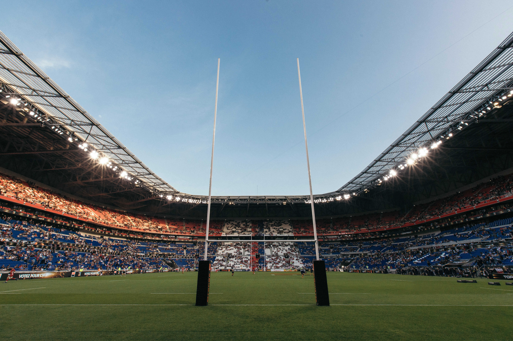
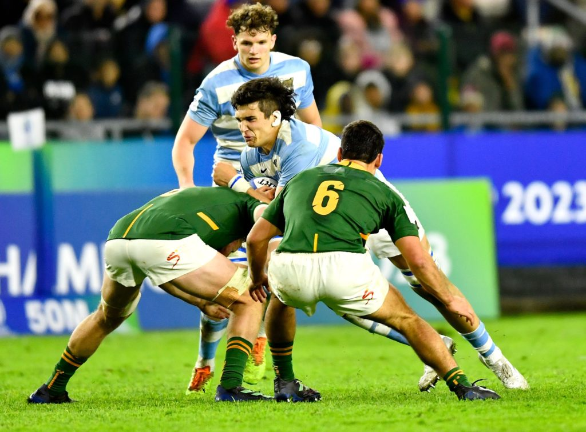
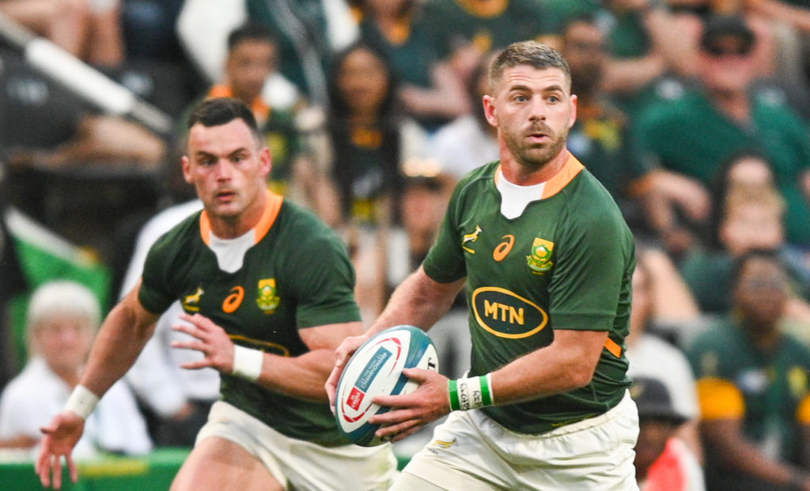
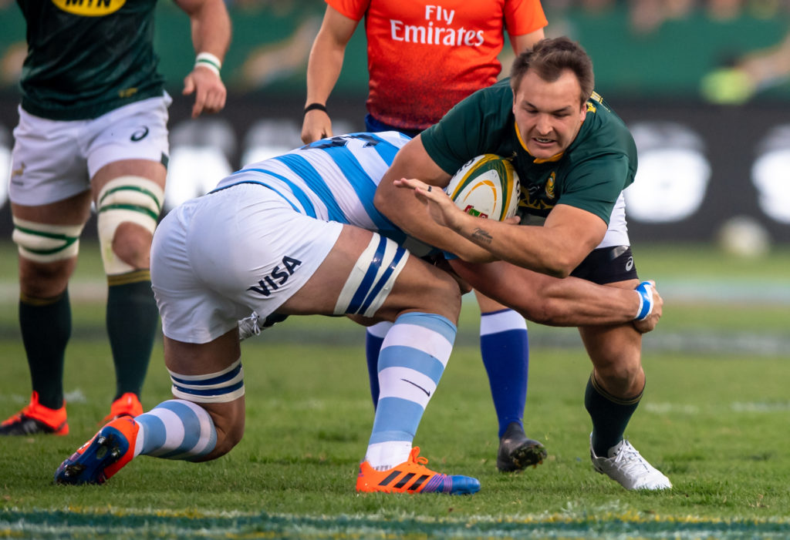
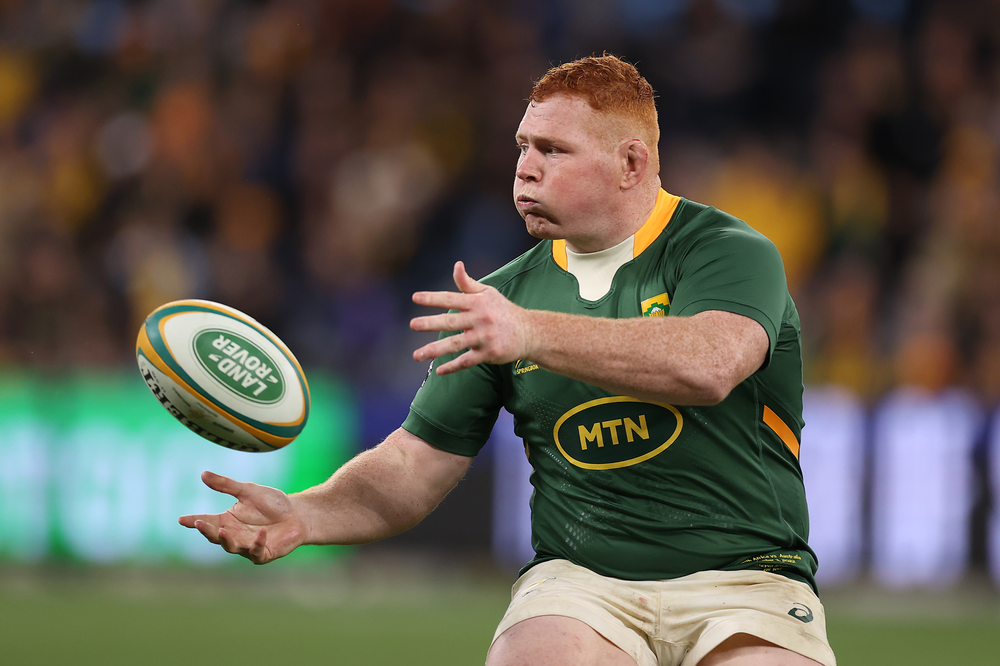
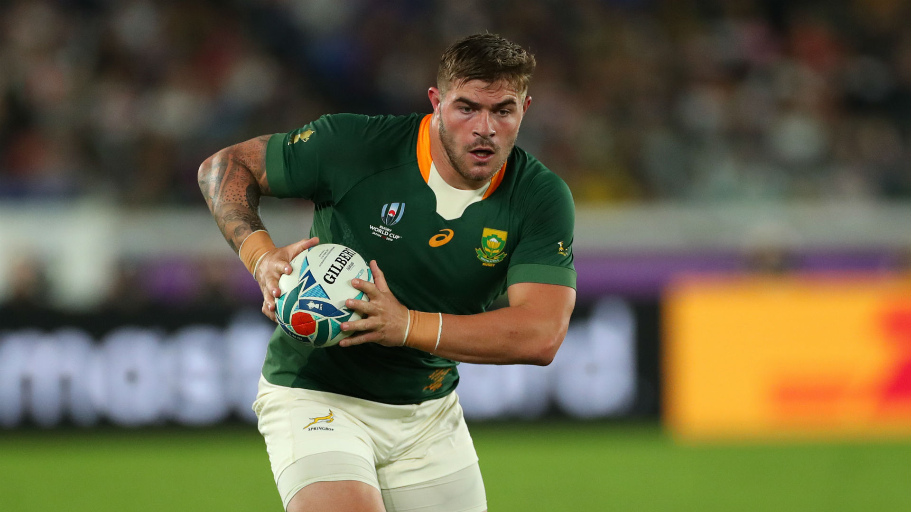
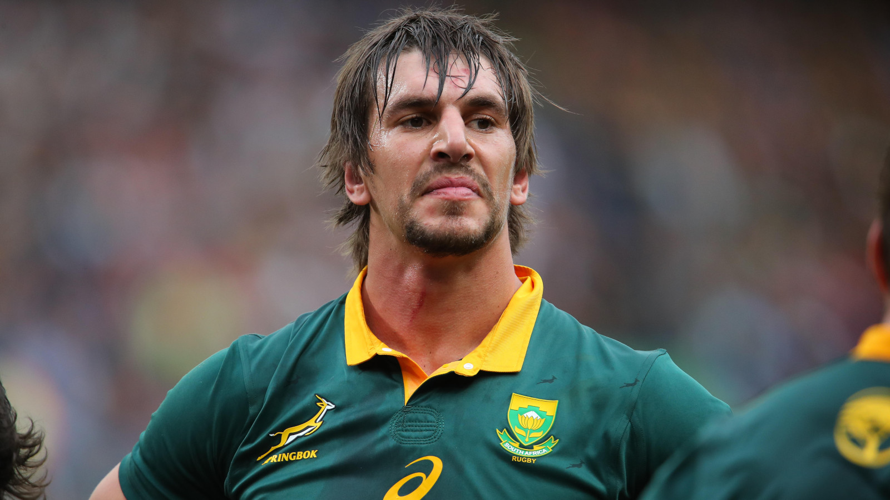

Springbok Fantasy Club
As passionate rugby enthusiasts, we are a vibrant community of fans who share a deep love for the game. Our club is dedicated to celebrating the spirit of rugby and fostering a sense of camaraderie among fellow fans.
At Springbok Fantasy Club, we embrace the excitement and thrill that rugby brings. We gather to cheer on our favorite teams, engage in lively discussions, and create memorable experiences together. Whether you're an ardent follower of the Springboks or simply enjoy the sport, you'll find a welcoming home among our ranks.
Whether you're a long-time rugby aficionado or new to the sport, the Springbok Fantasy Club invites you to join our vibrant community. Experience the passion, the cheers, and the camaraderie that rugby brings. Together, let's celebrate the game we love and embrace the spirit of the Springboks!


Junior Boks fight back to secure playoff place

World Cup winner joins Bulls

Esterhuizen fuelled by World Cup disappointment

Steven Kitshoff is a South African rugby union player who plays as a loosehead prop. He currently captains the Stormers in the United Rugby Championship and previously Super Rugby, and has previously played for Bordeaux in the French Top 14 and Western Province in the Currie Cup.
Kitshoff was born in Paarl, South Africa on February 10, 1992. He attended Hendrik Louw Primary School and Paul Roos Gymnasium. He made his provincial debut for Western Province in 2011 and his Super Rugby debut for the Stormers in 2012.
In 2015, Kitshoff moved to France to play for Bordeaux. He returned to South Africa in 2017 to rejoin the Stormers. He has since established himself as one of the top loosehead props in the world.
Malcolm Marx, a South African rugby union player who plays as a hooker. He currently plays for the Kubota Spears in the Japanese Top League and for the South Africa national team, the Springboks.
Marx was born in Germiston, South Africa on July 13, 1994. He attended King Edward VII School and the University of Johannesburg. He made his provincial debut for the Golden Lions in 2014 and his Super Rugby debut for the Lions in 2015.
Marx quickly established himself as one of the best hookers in the world. He is known for his powerful scrummaging, his ability to break the gainline, and his deft passing skills. He has also been a reliable defender and lineout jumper.


Eben Etzebeth, a South African rugby union player who plays as a lock. He currently plays for the Sharks in the United Rugby Championship and for the South Africa national team, the Springboks.
Etzebeth was born in Cape Town, South Africa on October 29, 1991. He attended Tygerberg High School and the University of Cape Town. He made his provincial debut for Western Province in 2011 and his Super Rugby debut for the Stormers in 2012.
Etzebeth quickly established himself as one of the best locks in the world. He is known for his powerful running and tackling, his athleticism, and his ability to read the game. He has also been a reliable lineout jumper and defender.
Faf de Klerk, a South African rugby union player who plays as a scrum-half. He currently plays for the Yokohama Canon Eagles in Japan Rugby League One and for the South Africa national team, the Springboks.
De Klerk was born in Nelspruit, South Africa on October 19, 1991. He attended Nelspruit High School and the University of Pretoria. He made his provincial debut for the Pumas in 2012 and his Super Rugby debut for the Lions in 2014.
De Klerk quickly established himself as one of the best scrum-halves in the world. He is known for his quick passing, his elusive running, and his ability to read the game. He has also been a reliable defender and lineout thrower.
Steven Kitshoff is a South African rugby union player who plays as a loosehead prop. He currently captains the Stormers in the United Rugby Championship and previously Super Rugby, and has previously played for Bordeaux in the French Top 14 and Western Province in the Currie Cup.
Kitshoff was born in Paarl, South Africa on February 10, 1992. He attended Hendrik Louw Primary School and Paul Roos Gymnasium. He made his provincial debut for Western Province in 2011 and his Super Rugby debut for the Stormers in 2012.
In 2015, Kitshoff moved to France to play for Bordeaux. He returned to South Africa in 2017 to rejoin the Stormers. He has since established himself as one of the top loosehead props in the world.
Malcolm Marx, a South African rugby union player who plays as a hooker. He currently plays for the Kubota Spears in the Japanese Top League and for the South Africa national team, the Springboks.
Marx was born in Germiston, South Africa on July 13, 1994. He attended King Edward VII School and the University of Johannesburg. He made his provincial debut for the Golden Lions in 2014 and his Super Rugby debut for the Lions in 2015.
Marx quickly established himself as one of the best hookers in the world. He is known for his powerful scrummaging, his ability to break the gainline, and his deft passing skills. He has also been a reliable defender and lineout jumper.
Eben Etzebeth, a South African rugby union player who plays as a lock. He currently plays for the Sharks in the United Rugby Championship and for the South Africa national team, the Springboks.
Etzebeth was born in Cape Town, South Africa on October 29, 1991. He attended Tygerberg High School and the University of Cape Town. He made his provincial debut for Western Province in 2011 and his Super Rugby debut for the Stormers in 2012.
Etzebeth quickly established himself as one of the best locks in the world. He is known for his powerful running and tackling, his athleticism, and his ability to read the game. He has also been a reliable lineout jumper and defender.
Faf de Klerk, a South African rugby union player who plays as a scrum-half. He currently plays for the Yokohama Canon Eagles in Japan Rugby League One and for the South Africa national team, the Springboks.
De Klerk was born in Nelspruit, South Africa on October 19, 1991. He attended Nelspruit High School and the University of Pretoria. He made his provincial debut for the Pumas in 2012 and his Super Rugby debut for the Lions in 2014.
De Klerk quickly established himself as one of the best scrum-halves in the world. He is known for his quick passing, his elusive running, and his ability to read the game. He has also been a reliable defender and lineout thrower.
Join the Springbok Fantasy Club and become a part of our passionate community of rugby enthusiasts. As a member, you'll enjoy a range of benefits and exclusive access to exciting club activities. Here's what our membership entails:
Becoming a member of the Springbok Fantasy Club is quick and easy. Simply visit our website and navigate to the Membership section. Select your preferred membership type, fill out the registration form, and submit your payment online. Once your membership is confirmed, you'll receive a welcome pack with your membership card and additional information about upcoming events.
We welcome rugby enthusiasts of all ages and backgrounds to join our club. Whether you're a die-hard fan or a casual observer, our membership offers an incredible opportunity to connect with like-minded individuals and immerse yourself in the world of rugby.
Don't miss out on the chance to be part of the Springbok Fantasy Club. Join today and embrace the camaraderie, passion, and excitement of being a part of our rugby community!
We would love to hear from you! If you have any inquiries, suggestions, or would like to get in touch with the Springbok Fantasy Club, please reach us using the following contact details:
For specific inquiries, feel free to contact our dedicated team members:
We value your feedback and strive to respond promptly to all messages. Whether you have a question about membership, upcoming events, or general rugby-related queries, our team is here to assist you.
Additionally, you can stay connected with us through our social media channels:
Don't hesitate to reach out to us with your thoughts, suggestions, or any rugby-related discussions. We're excited to connect with you!